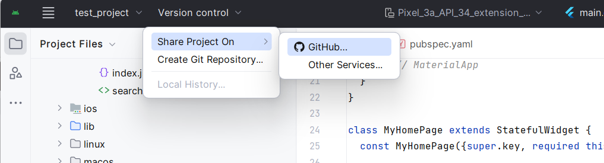
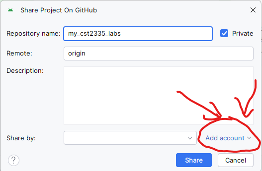
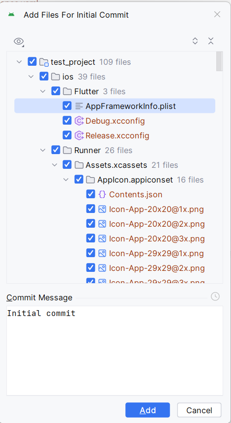
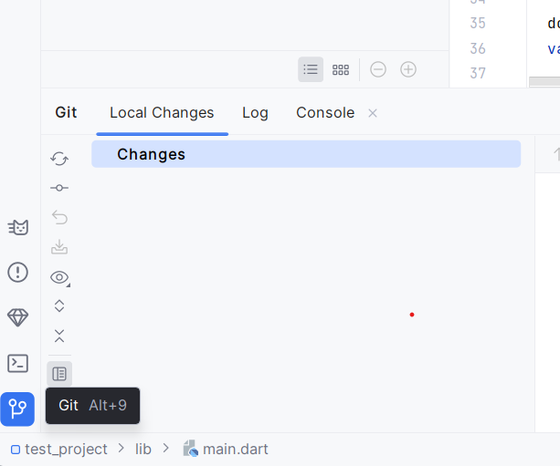
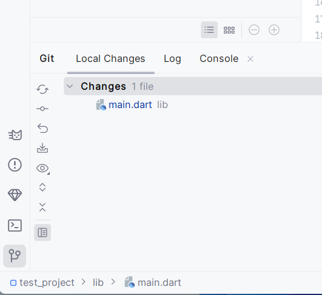
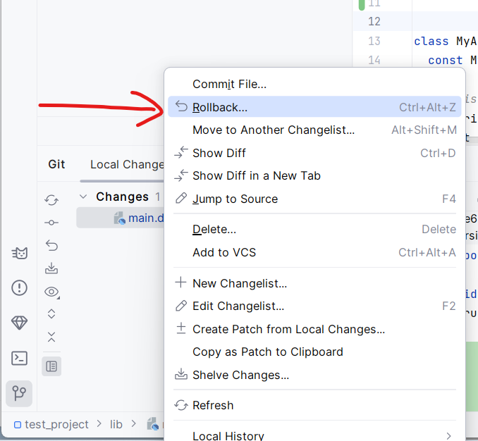

Git is a program that tracks changes in your source code, and who made those changes. It was created by Linus Torvalds, the same person who crated Linux. Git was created to help create Linux, where hundreds of people are contributing code to a project from around the world.
You should have Git installed from your previous courses. If not, then go to Git - Downloads (git-scm.com) and download and install Git on your computer. When installing Git, chooding of the default installation options are fine. Once git is installed, you can enable git integration with Android Studio by clicking on the "Version Control" menu, and click on "Share Project On", and then "Github".

On the next window, select "Add account:" to link to your Github account

Then log in to your Github account using your web browser. Once you have finished, you can close the browser and come back to Android Studio where , click on the "Share" button.
You will get a list of all the files from your project that you will upload to your github account:

You must also specify a message that usually describes what changes your are saving. Your first time, it is normal to use "Initial Commit". Then click the "Add" button.
Once everything has been commited, if you click on the "Commit" window on the left side, you should see that the window is now empty:

If you go to your main.dart file, just add some empty lines by pressing the "Return" key. You should see that the main.dart file shows up in the list of unsaved changes:

If you undo your changes to put it exactly the way it was when you committed your files, you will see that the list is empty. If you forgot what changes you made, you can always do what's called a "Rollback", which will get rid of all unsaved changes:

Now that everything has been saved, you can move on to this week's material.